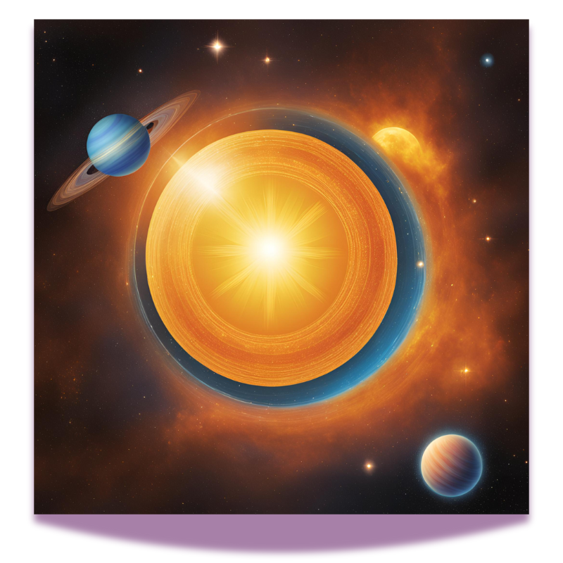
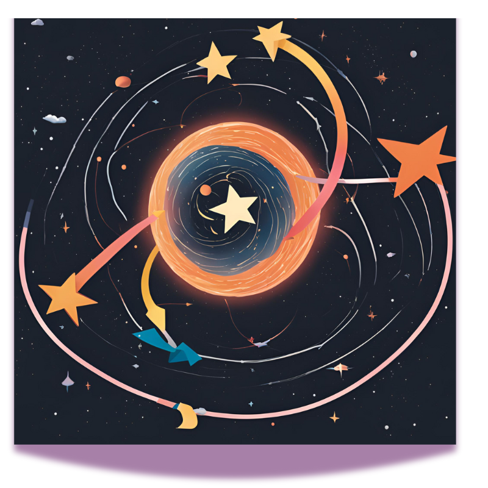
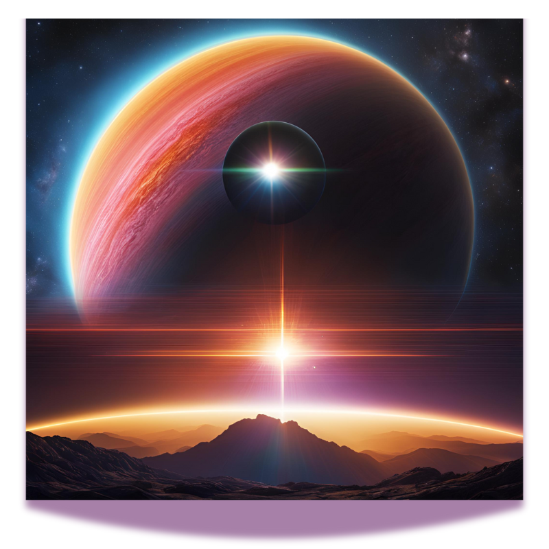
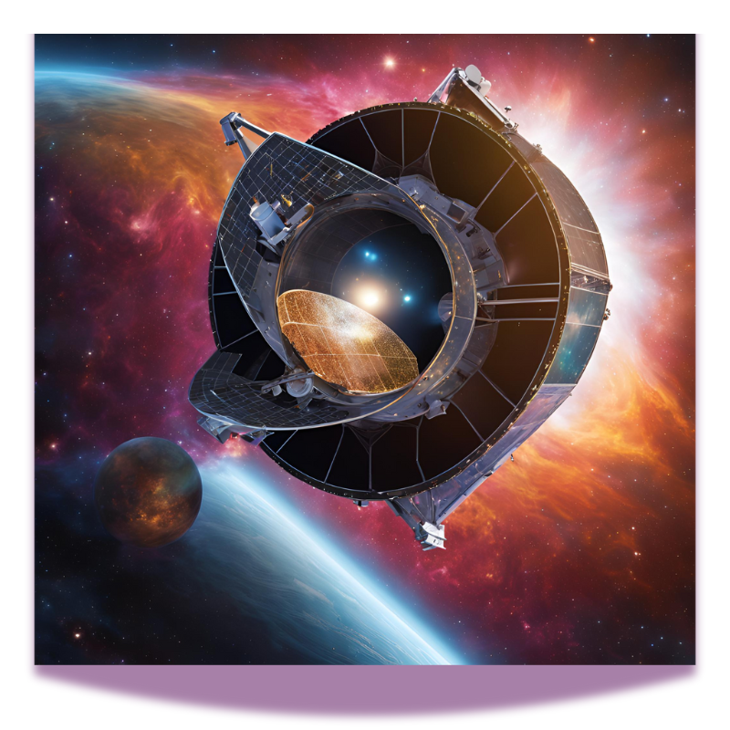

Welcome to the universe of discovery! You are a space explorer tasked with finding new exoplanets. Will you choose the right method to uncover these distant worlds?
Choose Your Method

How will you search for exoplanets?
Transit Method

You have chosen the Transit Method! This involves observing the light from a star and noting dips in brightness that indicate a planet passing in front.
Radial Velocity Method

You have chosen the Radial Velocity Method! This technique measures changes in the star's velocity due to the gravitational pull of an orbiting planet.
Transit Method Success!
Congratulations! You've successfully discovered a new exoplanet using the Transit Method!
Radial Velocity Method Success!

Congratulations! You've successfully discovered a new exoplanet using the Radial Velocity Method!